There are a total of 51 Key items that are necessary for Hunters to reach the end of the night.


| Item Name | Description | |
|---|---|---|
| Adeline Brain Fluid | Greyish amoeba-shaped brain fluid. Wobbles and bounces. Extracted from a patient whose head expanded until that was all that they were. We fail to realize our own latent potential, until the moment it is lost, and we sense its absence. Ironically, this is the very nature of insight, like the moment one licks one's own blood, only to be startled by its sweetness. | |
|
Astral Clocktower Key | Key to the Astral Clocktower at the top of the Grand Cathedral. The caretaker of the tower's numerous patients, known to them only as Lady Maria, made her home behind the giant star-interpreting clock. |
|
Balcony Key | Key to the balcony on the first floor of the Research Hall. Lady Maria of the Astral Clocktower gave this to the patient, Adeline. Maria had hoped Adeline would find comfort in the faint breeze that carried the scent of flowers from the outside, but Adeline couldn't fathom her intentions. |
|
Black Messenger Hat | Hat that messengers are oddly fond of. Symbol of the preventative hunters of the Healing Church. The inhabitants of the stump appear to have an interest in adornment. Why not let them be happy, and revel as babes? |
|
Blood Dreg | The Vilebloods of Cainhurst, blood-lusting hunters, see these frightful things in coldblood. They often appear in the blood of echo fiends, that is to say, the blood of hunters. Queen Annalise partakes in these blood dregs offerings, so that she may one day bear the Child of Blood, the next Vileblood heir. |
|
Blood Gem Workshop Tool | A misplaced workshop tool from the Hunter's Dream. The hunter who retrieves this can fortify weapons by kneading blood gems into them. Blood gems add properties to weapons when used to fortify them, as blood defines an organism. |
| 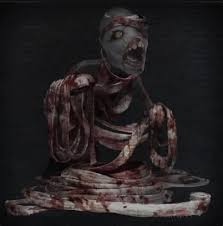 | Blood Messenger Head Bandage | Accessory adored by naive messengers imitating the bandages of scourge victims, unaware of their meaning. The spatters of blood give it a particularly nice touch. The inhabitants of the stomp appear to have an interest in adornment. Why not let them be happy, and revel as babes? |
| Cainhurst Badge | Badge of the royal guards of Cainhurst, loyal guardians of the Vileblood Queen Annalise. The Vilebloods are hunters of blood, and hunt prey as they search for blood dregs. The hunter who joins them is faced with a decision to merely borrow their strength, or to become one of them, heart and soul. | |
| 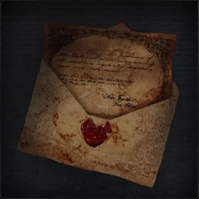 | Cainhurst Summons | An old blood-stained summons, inviting an honored guest to the forsaken Castle Cainhurst. Rather bafflingly, it is addressed to you. Do not hesitate; the stagecoach leaves from Hemwick crossing. |
|
Celestial Dial | A celestial dial that functions with the giant Astral Clock in the Grand Cathedral. When the dial is held up towards the Astral Clock, the clock will come to life, and reveal a secret to its curious interloper. |
| 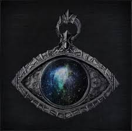 | Cosmic Eye Watcher Badge | Badge of a member of the Choir, elites of the Healing Church. The eye signifies the very cosmos. The Choir stumbled upon an epiphany, very suddenly and quite by accident. Here we stand, feet planted in the earth, but might the cosmos be very near us, only just above our heads? |
| 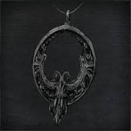 | Crow Hunter Badge | Badge of a hunter of hunters, who hunts those who have become intoxicated by their bloodlust. The badge of the hunter of hunters is quitly passed down from generation to generation, usually to an outsider from the hinterlands. To be entrusted with this cursed badge, one must be strong, resilient to the seduction of blood, and gracious when taking a comrade's life. |
|
Eye Pendant | An eye pendant which unlocks the surgery altar. There are two cathedrals in the Hunter's Dream. One lies past the River of Blood, and another contains the private research hall of the Healing Church. Only chosen members of the Healing Church, or their lamentable patients, can enter the research hall, using this eye. Grant eyes to the surgery altar skull. |
|
Eye of a blood-drunk Hunter | The eye of a blood-drunk hunter. Its pupil is collapsed and turned to mush, indicating the onset of the scourge of beasts. A hunter who goes drunk with blood is said to be taken by the Nightmare, destined to wander forever, engaged in an endless hunt. It is a fate that no hunter can escape. |
|
First Brain Fluid | Greyish amoeba-shaped brain fluid. Wobbles and bounces. Extracted from a patient whose head expanded until that was all that they were. In the early days of the Healing Church, the Great Ones were linked to the ocean, and so the cerebral patients would imbibe water, and listen for the howl of the sea. Brain fluid writhed inside the head, the initial makings of internal eyes. |
| 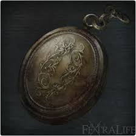 | Gold Pendant | Pendant of Vicar Amelia. Use to change into a Blood Gem, which fortifies weapons. This pendant, passed down among the vicars who head the Healing Church, is a reminder of the cautionary adage. To reveal the adage, touch the altar skull. |
| 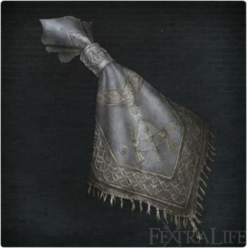 | Hunter Chief Emblem | A cloth emblem that belonged to the captain of the Church hunters long ago. Opens the main gate that leads to the round plaza of the Great Cathedral. The main gate is shut tight on nights of the hunt, and could only be opened from the other side with this emblem. In other words, the captain's return, and this emblem, determined the end of the hunt. |
| 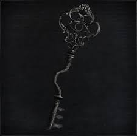 | Iron Door Key | Of the three great bridges that link the two cathedral cradles, this key opens the iron door that leads to the midlevel bridge. There are no thieves in the nightmare. Then, why lock a door? Be warned, there must be a very, very good reason. |
|
Laurence’s Skull | Skull of Laurence, first vicar of the Healing Church. In reality he became the first cleric beast, and his human skull only exists within the Nightmare. The skull is a symbol of Laurence's past, and what he failed to protect. He is destined to seek his skull, but even if he found it, it could never restore his memories. |
|
Lecture Theatre Key | Key to the Lecture Theatre in the Lecture Building. Today, the two-story Lecture Building is adrift in the nightmare, but once it was a place of reflection, where scholars learned of history and archaeology. Perhaps it still is, as the students in the lecture theatre appear to await the return of their professor. |
|
Lunarium Key | Key to the lunarium facing the lake on the second floor of Byrgenwerth College. In his final years, Master Willem was fond of the lookout, and the rocking chair that he kept there for meditation. In the end, it is said, he left his secret with the lake. |
|
Messenger Head Bandage | Accessory adored by naїve messengers imitating the bandages of scourge victims, unaware of their meaning. The inhabitants of the stump appear to have an interest in adornment. Why not let them be happy, and revel as babes? |
|
Messenger Top Hat | Hat that messengers are oddly fond of. A nice top hat rounds out any Yharnam gentleman. The inhabitants of the stump appear to have an interest in adornment. Why not let them be happy, and revel as babes? |
|
Messenger Urn Festival | Accessory adored by naїve messengers. The messengers wear the urns, filled with incense that wards off beasts, on their heads upside-down, suggesting a predilection to the dark. The inhabitants of the stump appear to have an interest in adornment. Why not let them be happy, and revel as babes? |
|
Oedon Tomb Key | Key to the gate that blocks the Tomb of Oedon. Beyond the tomb, Oedon Chapel can be found in the center of the Cathedral Ward. Only today the church is abandoned, and some say that the residents of Oedon have all gone mad. |
| Old Hunter Badge | This hunter's badge, crafted in Gehrman's time, has no practical purpose, except perhaps to assist in romanticising about the past. The badge was a special privilege for the hunters of the past, and should not be dishonoured. It should be left in peace, unless one is truly prepared to assume the will of those gone before. | |
|
Old Hunter Bell | One of the resonating bells that cross the gaps of worlds. This bell is cracked and stained with the blood of beasts. A human must expend Insight to ring this uncanny bell. The old hunters, who have long passed from the dream but cannot forget the feeling of the hunt, rely upon messengers to relay their thoughts. Ring the bell at their side, and they are certain to give a listen. For the night of the hunt is long, and unchanging. |
|
Orphanage Key | Key to the Orphanage, birthplace of the Choir. The Orphanage, shadowed by the Grand Cathedral, was a place of scholarship and experimentation, where young orphans became potent unseen thinkers for the Healing Church. The Choir, that would later split from the Healing Church, was a creation of the Orphanage. |
| Powder Keg Hunter Badge | Badge crafted by the Powder Kegs, the heretics of the Workshop. The Powder Kegs aboration of complex design and big booms culminated in weapon designs that contrast with those traditionally of the Workshop. The late Powder Kegs, bless their souls, had a motto: "If a weapon ain't got kick, it just ain't worth it." | |
|
Queenly Flesh | What remains of Annalise, blood queen of Cainhurst. This pinkish lump of flesh remains warm, as if cursed. All hail the undying queen of blood! |
| Radiant Sword Hunter Badge | One of the badges crafted by the Healing Church. The radiant sword indicates the heirs to the will of Ludwig. These hunters, also known as Holy Blades, are what remains of an ancient line of heroes that date back to a very early age of honour and chivalry. | |
| 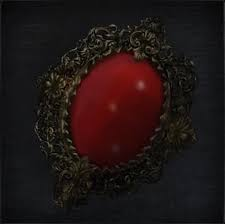 | Red Jeweled Brooch | A woman's bright-red brooch, engraved with the name Viola. Perhaps the jewel is a gift from a hunter. Use to change into a droplet blood gem that fortifies any weapon. With the proper workshop tool, various weapons can be fortified. |
|
Red Messenger Ribbon | Red ribbon that messengers are oddly fond of. The thick, pungent red was drawn from the organs of some unfortunate victim. A strange choice indeed, but perhaps for the messengers wearing this accessory constitutes a form of mourning. |
|
Ring of Betrothal | The inhuman beings known as the Great Ones imbued this ring of betrothal with some special meaning. In the age of the Great Ones, wedlock was a blood contract, only permitted to those slated to bear a special child. |
|
Rune Workshop Tool | Runesmith Caryll, student of Byrgenwerth, transcribed the inhuman utterings of the Great Ones into what are now called Caryll Runes. The hunter who retrieves this workshop tool can etch Caryll Runes into the mind to attain their wondrous strength. Provost Willem would have been proud of Caryll's runes, as they do not rely upon blood in any measure. |
| Saw Hunter Badge | Badge crafted long ago at the Workshop. Attests to one's prowess as a hunter of beasts. The Workshop is gone, and no group recognises this meaningless badge, except the messengers in the bath, who understand its profundity. Certain things can only be entrusted with a hunter in possession of this badge, or so they believe. | |
|
Second Brain Fluid | Greyish amoeba-shaped brain fluid. Wobbles and bounces. Extracted from a patient whose head expanded until that was all that they were. Once, a young girl had an older brother who was determined to become a doctor, and so she wilfully became his patient. In the end, this led to their encounter with the Eldritch Truth, for which they considered themselves blessed. |
|
Small Hair Ornament | A small, very ordinary hair ornament. Although it has been lost for quite some time, one can still see signs of the care with which this tasteful ornament was once kept. Its colour would stand out most brilliantly against a head of greyish hair. |
| Spark Hunter Badge | Badge crafted in secret by Archibald, the infamous eccentric of the Healing Church, for his friends. Archibald was fascinated by the blue sparks that emanate from the hides of the darkbeasts, and dedicated his life to its artificial reproduction, in a style of inquiry that, incidentally, closely followed the methodology of Byrgenwerth. | |
| Sword Hunter Badge | One of the badges crafted by the Healing Church. The silver sword is a symbol of a Church hunter. Ludwig was the first of many Healing Church hunters to come, many of whom were clerics. As it was, clerics transformed into the most hideous beasts. | |
| 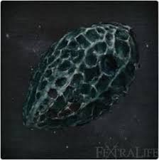 | Tonsil Stone | A latticed, deformed rock, or perhaps a meteorite. Appears useless, but possesses some old gravitational force that prevents its riddance. A dubious soul once said: "Step lightly round to the right of the great cathedral, and seek an ancient, shrouded church... The gift of the godhead will grant you strength..." |
|
Underground Cell Inner Chamber Key | Key to the inner chamber of the cell below the Grand Cathedral. The innermost chamber of the underground cell holds a lone madman. He wears a beast hide, and rings a bell that emits no sound. Unending death awaits those who can hear the soundless bell. |
| 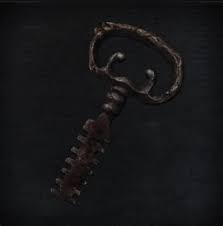 | Underground Cell Key | Key to the cell below the Grand Cathedral. Hunters are held within the underground cell, so that things better left unseen, and knowledge better left unknown, will decay quietly in the fallow darkness. |
|
Unopened Summons | An old, sealed summons. Like the first of its kind, it is an invitation to Cainhurst, but for whom is not known, as it lacks addressee. |
|
Upper Cathedral Key | The key to the Upper Cathedral Ward seal. The upper echelons of the Healing Church are formed by the School of Mensis, based in the Unseen Village, and the Choir occupying the Upper Cathedral Ward. This key brings one a step closer to the Choir. |
| 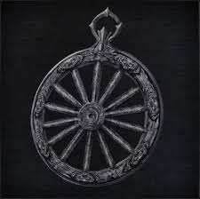 | Wheel Hunter Badge | Martyr Logarius led a band of Executioners, and this badge was crafted at their dedicated workshop. The wheel symbolizes righteous destiny. Their workshop was a secretive enclave of mystical beliefs and heady fanaticism which served as the backbone of the Executioners' unique brand of justice. Badge crafted by the Oto Workshop, precursor to the workshop of the heretical Powder Kegs. The Powder Kegs were driven by singular ideas, and crafted strange weapons of great intricacy. It is clear that the philosophy of the Powder Kegs was already established at this time. |
|
White Messenger Ribbon | White ribbon that messengers are oddly fond of. A ribbon made of fine lace that shines remarkably, more suited to pretty young girls than silly old messengers. |
|
Workshop Haze Extractor | A misplace workshop tool from the Hunter's Dream. The hunter who retrieves this can extract Arcane Haze from ritual materials. But alas, spent materials are lost. |
| 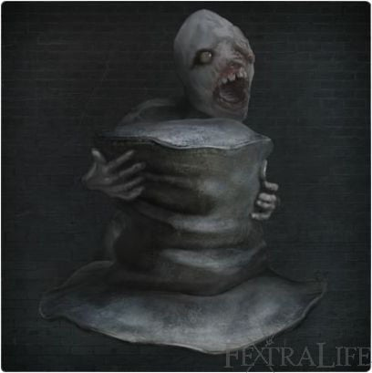 | Worn Messenger Top Hat | A worn, rumpled top hat that messengers are oddly fond of. The inhabitants of the stump appear to have an interest in adornment. Why not let them be happy, and revel as babes? |
|
Yharnam Messenger Hat | Hat that messengers are oddly fond of. Commonly called a Yharnam hat. The inhabitants of the stump appear to have an interest in adornment. Why not let them be happy, and revel as babes? |
| 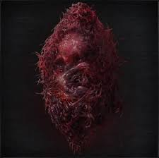 | Yharnam Stone | A sacred heirloom left by Yharnam, Pthumerian Queen. The Queen lies dead, but her horrific consciousness is only asleep, and stirs in unsettling motions. |